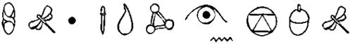

Artemis Fowl nasıl tanımlanabilir ki? Çeşitli psikiyatrlar bunu yapmayı denediler ama başaramadılar. Asıl sorun Artemis’in zekâsıydı. Üzerinde uygulanan her testi tersine çevirip herkesi tuzağa düşürüyordu. En büyük tıp dehalarının akıllarını başlarından alıp onları geveler durumda, kendi hastanelerine geri gönderiyordu.
Hiç kuşkusuz, Artemis bir dâhi çocuktu. Peki öyleyse, bu denli parlak bir zekâya sahip biri kendini neden suç işlemeye adaşındı ki? Bu sorunun yanıtını ancak tek bir kişi verebilirdi. Ve o da sessiz kalmaktan büyük zevk alıyordu.
Belki de Artemis’i yakından tanımak için, onun artık herkesçe bilinen ilk ve en hain macerasını anlatmak gerekir. Bu haberi kurbanlarla doğrudan yapılmış röportajlardan derledim ve Sizler öyküyü okudukça bunun hiç de kolay bir iş olmadığını fark edeceksiniz.
Öykü, bundan yıllarca önce, yirmi birinci yüzyılın ilk yıllarında başladı. Artemis Fowl aile servetini yeniden kazanmak için bir plan yaptı. Tüm uygarlıkları yok edebilecek, yaşadığı gezegeni türler arası bir savaşa itebilecek bir plan.